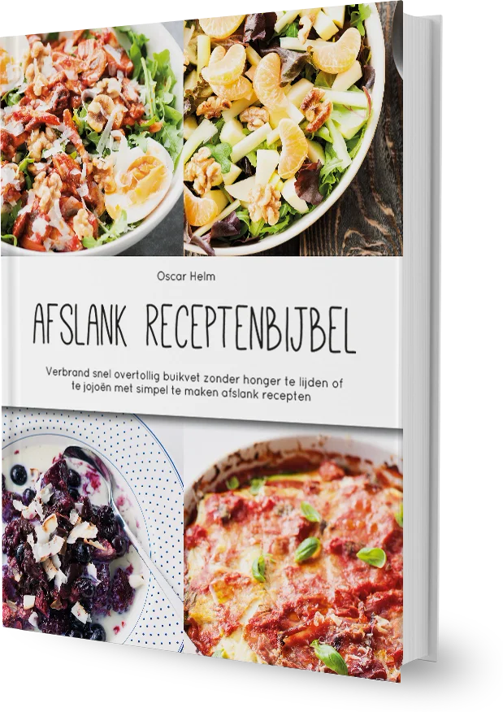

EenmaligBekijk planRecepten
Afslank Receptenbijbel
€ 27 eenmalig
Voor wie: Je kookt graag en wilt een boek vol recepten, met weekmenu's erbij
Bekijk het receptenboek ↗ Wat je krijgt en waar je op letJe kookt zelf, met een vast weekmenu. Zo weet je wat je eet, haal je alleen in wat je nodig hebt en heb je minder snel trek in snacks.
Bekijk de plannen ↓
De Schijf van Vijf adviseert elke dag 250 gram groente en 2 stuks fruit.

Bij elk plan lees je wat je krijgt en waar je op let.
Je kiest bij de aanbieder. Via onze links krijgen wij een kleine vergoeding (#ad), jij betaalt niets extra.

EenmaligBekijk planVoor wie: Je kookt graag en wilt een boek vol recepten, met weekmenu's erbij
Bekijk het receptenboek ↗ Wat je krijgt en waar je op let
Een plan voor 7 dagen, een boodschappenlijst om af te vinken en 3 makkelijke recepten.
Open de startgids → Keto
Keto